導演用高階語言交代創意，Agent 讀懂既有工作流、重組提示詞、準備參考圖、操作 MCP，最後把有效方法保存成 Skill。
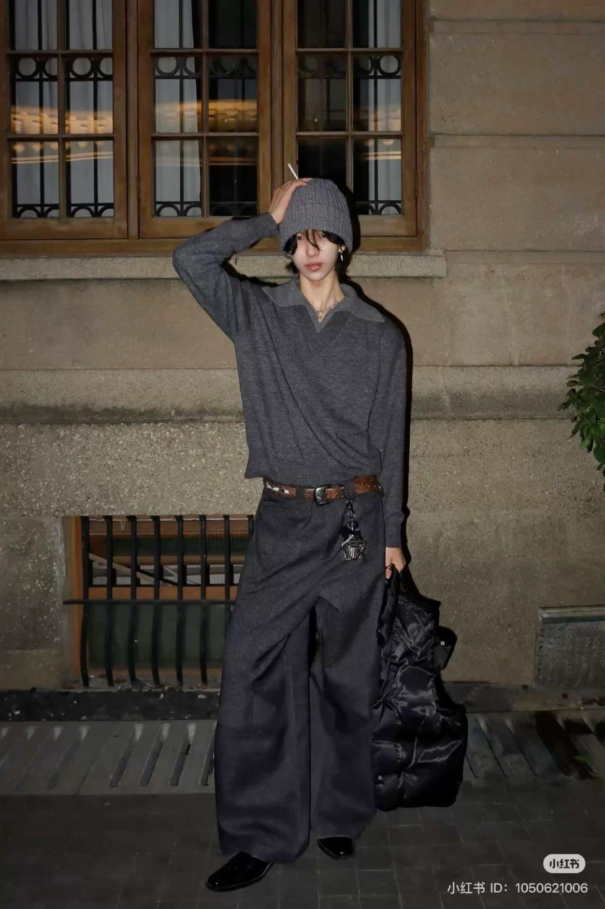
Comfy、ChatGPT Image Generation、Kling O3 與提示詞是示範工具；真正要學的是如何引導 Agent 研究、提案、執行、驗收並留下可重跑紀錄。
Agent 是帶著目標與規則，能讀取專案資料、使用工具、等待必要決定並檢查成果的人工智慧代理執行者。
| 層次 | 本課例子 | 用途 |
|---|---|---|
| 模型 | Gemini、OpenAI 模型、Kling O3 | 理解、推理或生成內容 |
| 工作介面 | Antigravity、ChatGPT、Codex | 放入資料、交代任務、使用工具 |
| 節點工作流 | ComfyUI | 把模型、條件、取樣與輸出接成流程 |
| 工具連線 | MCP | 把 Kling 等服務接成 Agent 工具 |
| 可重用規則 | AGENTS.md、Skill | 保存工作方法、確認點與驗收標準 |
創意、取捨、權限與最終驗收。
研究、轉譯、執行、紀錄與回報。
| 章節 | 學習任務 | 交給下一章的成果 |
|---|---|---|
| 01 | 建立共同語言 | 分清楚 Agent、工作介面、影片模型、提示詞與工具 |
| 02 | 拆學員問題 | 定位需求、素材、方法、工具或驗收缺口 |
| 03 | 先看完整工作流 | 說出高階創意如何走到核准、執行、驗收與保存 |
| 04 | 追查方法來源 | 從原始對話與 Comfy 找到提示詞基準和決策證據 |
| 05 | 轉譯並完成任務 | 參考圖、Kling 輸入、MCP 任務紀錄與成片驗收 |
| 06 | 轉移並保存 | 商品影片方法與可重跑的 Skill |
影片生成模型把文字、圖片或影片參考轉成影片；Agent 使用的語言模型負責讀專案、查資料、寫模型專用提示詞並操作工具。兩者不能混成同一張排行榜。
| 影片模型 | 文件支持的輸入結構 | 證據性質 |
|---|---|---|
| Kling VIDEO 3.0／Omni | 主體＋動作＋場景＋選用的攝影語言／光線／氣氛 | 官方提示指南 |
| Veo 3.1 | 主體＋動作＋風格＋攝影／構圖／鏡頭／氣氛；聲音可明寫 | 官方提示指南 |
| Runway Gen-4.5 | 圖片負責外觀；文字集中描述動作、攝影機與時間進程 | 官方提示指南 |
| Seedance 2.5 | 時間區段、敘事、鏡位、動作、節奏與多模態參考 | 官方產品說明，非完整提示規範 |
| Wan 2.2／ComfyUI | 提示詞擴寫、負面提示與取樣參數；節點屬工作流控制 | 官方程式庫＋本課專案策略 |
固定創意意圖、素材、片長、畫幅與驗收標準，再依各模型的輸入責任改寫。這是公平測試設計，不代表某種句型必然得到較好的作品。
| 能力 | 共同評分 |
|---|---|
| 讀脈絡與查證 | 先讀 AGENTS.md、Skill、素材和紀錄；提供官方來源與日期 |
| 提案與執行 | 交付中文意圖、模型專用提示詞、素材責任、參數、核准點與驗收表 |
請讀取這個 Kling O3 專案，先交付方案與送片摘要，不要直接執行付費生成。
官方資料查閱：2026 年 10 月 12 日。Kling：https://kling.ai/quickstart/text-to-video-prompt-guide Veo：https://ai.google.dev/gemini-api/docs/veo Runway：https://help.runwayml.com/hc/en-us/articles/48324313115155-Image-to-Video-Prompting-Guide Seedance：https://seed.bytedance.com/en/blog/one-take-creation-flexible-referencing-introducing-seedance-2-5 Wan：https://github.com/Wan-Video/Wan2.2
指定目標模型 Kling O3，提供從 Comfy 帶來的提示詞範本、角色或商品素材、鏡頭創意、限制與完成標準。
1｜讀取脈絡：Agent 先讀 AGENTS.md、Skill、專案素材、既有紀錄與目前可用工具。
2｜查證方法：以官方文件與 MCP 即時回傳確認模型、輸入、參數與限制；把易變資訊標上日期。
3｜提出方案：交付中文意圖、參考圖提示詞、Kling O3 提示詞、素材責任、參數與驗收表。
4｜核准參考圖：導演確認角色或商品、姿態、鏡位、構圖、色彩與光線。
5｜完成參考圖：ChatGPT 產生正式第一幀；Agent 整理完整送片摘要。
6｜核准付費送片：導演確認圖片、提示詞、模型、片長、比例、解析度、音訊、版本數與提交次數。
7｜Kling MCP 執行：上傳素材並只提交一次，保存 generationId 與 taskTraceId。
8｜追蹤與驗收：等待期間只查同一任務；完成後逐項檢查，下一版只改一個主要變因。
9｜保存方法：本次素材與紀錄留在 Project；已驗證、可跨任務重用的方法寫入 Skill。
參考圖是否通過；是否允許付費提交影片。
來源、方案、參數、任務編號、成品與逐項驗收結果。
| 導演 → Agent | 專案 → Agent | Agent → 模型 |
|---|---|---|
| 高階指令：目的、素材、限制、核准點與完成標準。 | AGENTS.md／Skill：可重跑步驟、工具分工與驗收規則。 | 提示詞與參數：依目前模型的輸入方式整理本次可執行資料。 |
每一步都要留下下一個人能檢查的交付物；工具顯示 COMPLETED 只代表執行結束，作品是否符合創意與品牌標準仍由導演驗收。
| 回合 | 導演原話／事件 | Agent 可見回覆與結果 | 工作流意義 |
|---|---|---|---|
| 1 | 建立新工作流；指定 Kling O3；「我擔任導演。」 | 列出六步流程與預設規格：16:9、5 秒、1080p、單版、單鏡頭、音效開啟；付費前等待核准。 | 先定義角色、工具、核准權與失敗邊界。 |
| 2 | 「這是提示詞範本，我們往後的提示詞風格都要照這個樣子。」並貼上 Comfy 提示詞。 | 拆出景別、主體、動作、環境、物理動態、焦點、模糊、色光與情緒順序。 | 描述基準由導演提供；Agent 分析與轉譯。 |
| 3 | 提供角色附件；「讓他蹲下抬頭，鏡頭使用廣角鏡頭看他。」 | 提出低機位、20mm 感、夜間石造街景、直閃、焦點、次要動態，以及參考圖與 O3 影片提示詞草案。 | 短創意被補成可見、可修改的方案。 |
| 4 | 「核准。」 | 歷史上誤用 Kling Image O3 生成參考圖：2 點、COMPLETED，並留下 generationId。 | 核准仍可能因工具責任不清而執行錯誤。 |
| 5 | 「交代下去，圖片是由 CHAT GPT 生成。」 | 正式參考圖改由 ChatGPT Image Generation；Kling 只負責影片。舊圖保留為歷史，不作正式輸入。 | 糾正同時更新成品狀態、後續規則與版本紀錄。 |
| 6 | ChatGPT 正式參考圖完成。 | 送片前再次列出兩張輸入圖、5 秒、16:9、1080p、1 版、多鏡頭關閉與同步音訊開啟。 | 執行前把素材責任、參數與費用邊界變成可檢查摘要。 |
| 7 | 「生成第一段影片。」 | 提交一次；保存 generationId、taskTraceId、60 點與狀態變化，只查詢同一任務。 | 短指令成立，因為前面已有完整摘要和執行邊界。 |
| 8 | QUEUING → RUNNING → COMPLETED | 交付影片、封面、完成時間與連結失效提醒。 | 工具完成後仍要依驗收表判斷內容。 |
| 9 | 「你可以把我們的對話變成 TXT 檔給我嗎？」 | 把可見對話、提示詞、核准點與結果整理成 UTF-8 紀錄。 | 工作流不只執行，也要留下可追溯教材與專案紀錄。 |
歷史圖片：AepElq…hPgN
正式影片：AR3Cf4…clsi
ChatGPT 生正式參考圖；Kling 只生影片；付費前交摘要；等待時不重複提交；舊版本保留。
完整整理：ORIGINAL_DIALOGUE_TEACHING.md 原始紀錄：sources/Kling_O3_對話紀錄_2026-10-11.txt
Wide shot of a free-spirited young woman running toward the camera through a sun-drenched field, white birds exploding upward all around her like symbols of freedom. Her hair and dress are caught by the wind, captured with crisp focus on her face and light motion blur in the foreground flowers and wings. Vivid colors, bright clear sky, optimistic, uplifting cinematic tone.
| 段落 | 作用 |
|---|---|
| Wide shot…running toward the camera | 先說景別、主體與主要動作 |
| white birds…hair and dress…wind | 補上環境與次要動態 |
| crisp focus…motion blur | 指定焦點與允許模糊的位置 |
| Vivid colors…cinematic tone | 用色彩、光線與情緒收束 |
這不是 Kling 官方提示詞範本。可沿用的是創意意圖與描述順序；搬到新模型時，仍須重新決定文字、參考圖與參數各自負責什麼。
| 角色 | 白話解釋 | 學員要看懂 |
|---|---|---|
| 模型載入 | 選擇負責生成的核心 | 換模型可能改變節點與提示詞需求 |
| 文字編碼 | 把提示詞轉成條件資料 | 編碼器必須與模型架構相容 |
| 參考控制 | 以圖片、姿勢、深度或 LoRA 增加條件 | 有些要求已由節點負責 |
| 取樣 | 依模型與條件逐步形成結果 | 種子、步數、引導、排程與降噪都會影響輸出 |
| 潛在資料 | 生成運算中的壓縮表示 | 過程中不一定是可直接觀看的像素 |
| VAE／解碼器 | 把潛在資料轉成圖片 | 解碼後才得到可觀看內容 |
原工作流還用了哪些參考圖、ControlNet、LoRA、種子與取樣參數？哪些視覺結果其實不是由提示詞單獨控制？
這次由哪個模型生成？哪些條件不是寫在提示詞裡？結果在哪一步才變成可觀看的圖片？
「我想要這個角色風格，讓他蹲下抬頭，鏡頭使用廣角鏡頭看他。」
導演已決定：角色來源、蹲姿、抬頭與廣角視覺。
Agent 提案：低機位、20mm 感、夜間場景、直閃、焦點、次要動態、鏡頭速度與結尾。
| 層次 | 保存內容 |
|---|---|
| 導演 → Agent | 成果、素材、限制、核准點與驗收方式 |
| 專案 → Agent | AGENTS.md／Skill 中的可重用規則 |
| Agent → 模型 | 依目前模型整理的提示詞、參考圖角色與參數 |
Agent 補的是可供導演核准的提案，不是偷偷替導演決定創意。
| 素材 | 責任 |
|---|---|
| 原始角色圖 | 角色身分、臉部、髮型、服裝與配件 |
| ChatGPT 正式參考圖 | 蹲姿、低機位、廣角透視、構圖、場景、色彩與光線 |
Use the attached photograph as the character, face, wardrobe, and styling reference. Create a cinematic 16:9 landscape image: a low-angle wide shot of the same androgynous young fashion figure crouching low on a nighttime stone pavement, chin lifted and dark eyes looking upward toward the lens. Preserve their recognizable face, shaggy black hair beneath the charcoal knit beanie, oversized charcoal V-neck sweater, dramatically wide pleated trousers, worn brown belt with dangling silver charms, pointed black shoes, and oversized black padded bag resting beside them. The camera sits just above the ground with a close 20mm wide-angle perspective, subtly enlarging the foreground knees and shoes while the old stone facade and wooden windows stretch away behind them; crisp focus holds on the face with gentle falloff toward the edges. Hard direct flash mixes with faint warm window light, deep graphite tones, raw nocturnal street-fashion energy, intimate, rebellious cinematic tone.
先指定附件負責角色，再描述一個靜止瞬間；接著鎖定姿態、鏡位、透視、焦點、光線與情緒。長時間事件留到影片階段。
Low-angle wide shot of the androgynous fashion figure from 圖片1 crouching on a nighttime stone pavement in the pose established by 圖片2, slowly lifting their chin toward the lens as the old facade stretches above them. Their shaggy hair, loose knit layers, and silver belt charms shift lightly in the breeze, captured with crisp focus on the face and gentle motion blur at the edges of the wide trousers during one slow push forward. Hard direct flash, deep graphite tones, tense, intimate, rebellious cinematic tone.
| 句子 | 這一句的責任 |
|---|---|
| 第一句｜鏡頭與事件 | 鏡位開場；自然交代圖片1負責角色、圖片2負責姿態；只寫一個主要動作與一個環境事件。 |
| 第二句｜物理與攝影 | 頭髮、衣料與飾品的自然反應；臉保持清楚；邊緣才允許模糊；只保留一次慢速前推。 |
| 第三句｜視覺與情緒 | 以直閃、深石墨色與三個同方向的情緒詞俐落收尾。 |
三句通常控制在 55—100 個英文單字，讀起來像一個電影瞬間。它來自本專案實作整理，不是 Kling 官方保證有效的固定語法；仍須用成片驗證。
Kling Image O3 曾完成一張參考圖，但不符合導演指定的工具分工。
正式參考圖由 ChatGPT Image Generation 產生；Kling 只負責影片。
學員不必先寫 MCP 程式：先會確認登入與模型、看懂提交參數、保存 generationId，並只查詢同一筆任務。
5 秒、16:9、1080p、1 版；多鏡頭關閉、同步音訊開啟；任務依序為 QUEUING → RUNNING → COMPLETED。點數與模型能力只代表 2026 年 10 月 11 日這次執行。
SHOT-001｜Kling O3｜5 秒｜16:9｜1080p
HTML 講義可直接播放；紙本與 PDF 顯示代表畫面。
| SHOT-001 驗收 | 可觀察標準 |
|---|---|
| 人物一致性 | 臉、髮型、灰色服裝、身形與配件保持 |
| 表演與鏡頭 | 低頭到抬頭清楚；低機位、廣角透視與一次平順前推成立 |
| 物理與結尾 | 頭髮、衣料、銀飾自然；最後一秒臉部與構圖仍可使用 |
保留人物、服裝、場景、光線與抬頭動作；只把攝影機前推速度降低一半。通過條件是人物比例穩定，最後一秒臉部仍清楚。
商品：Schwarzkopf Professional BC Bonacure Repair Rescue Shampoo（極緻修護髮露）。
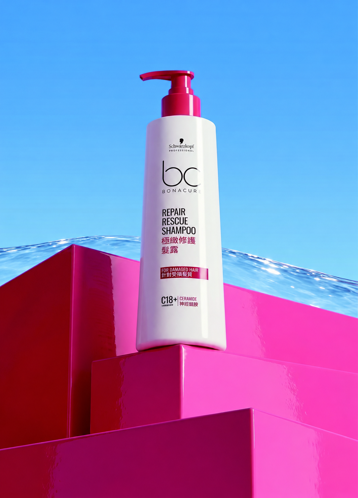
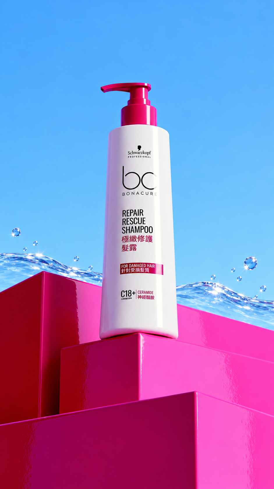
| 輸入 | 交給它的責任 |
|---|---|
| 圖片 1 | 固定商品身分、瓶身比例、桃紅壓頭、標籤、材質、風格與最後的英雄構圖。 |
| 圖片 2 | 固定較平靜的開場、較低的水位、9:16 畫幅和商品起始位置。 |
| Kling 提示詞 | 描述水從兩側聚集並升成透明水幕；一次緩慢前推與輕微上移；要求商品和文字全程穩定；補上水聲與商業情緒。 |
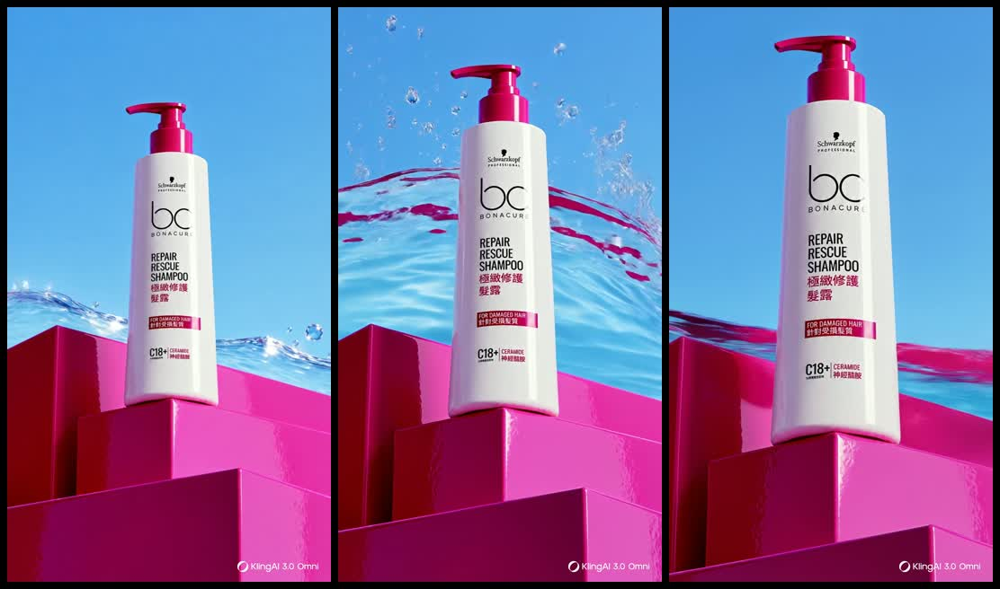
| 驗收面向 | 畫面上要檢查什麼 |
|---|---|
| 商品保真 | 白色瓶身、桃紅壓頭、瓶身比例、品牌標誌與標籤是否跨影格保持穩定。 |
| 環境動態 | 水是否由低到高自然聚集，水幕是否支援商品且沒有遮住標籤。 |
| 攝影機 | 是否只做一次緩慢前推與輕微上移，沒有突然縮放或多餘繞行。 |
| 結尾與聲音 | 結尾是否接近圖片 1 的英雄構圖；水聲是否自然且沒有搶走主體。 |
kling-video-v3_0_omni｜5 秒｜9:16｜1080p｜24 fps｜單鏡頭｜同步音訊開啟｜狀態 COMPLETED。這是 2026 年 10 月 11 日的單次紀錄；授課前仍由 MCP 重新確認模型名稱與能力。
以下三支 Jagua Blue Radiance 商品影片是本專案以 Gemini Veo 產生的實際結果。海灘情境是獨立段落；商品與水、商品微距對應 Workflow A。
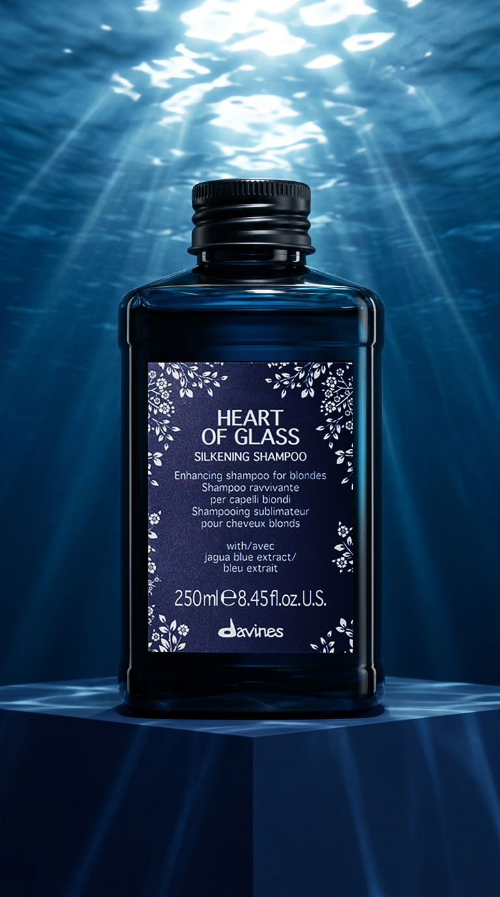
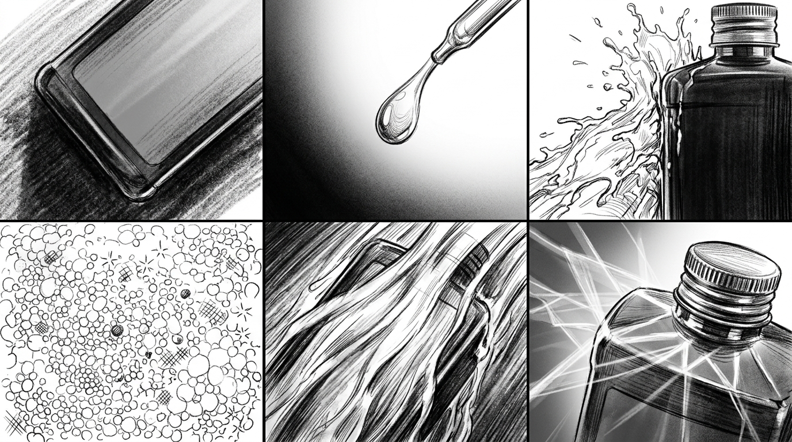
| 素材 | 交給 Veo 的責任 |
|---|---|
| 圖片 1 | 商品瓶型、標籤、材質、深海藍色調與水波折射光。 |
| 圖片 2 | 六段動作的順序與構圖；黑白線稿、格線不得進入成片。 |
| 提示詞 | 明確分配兩張圖的責任，再補上運鏡、動作時間線與禁止事項。 |
Image 1 是外觀與光影的唯一依據；Image 2 只提供動作順序。
Camera Movement 說明整體剪接；VFX Timeline 逐格指定水花、泡沫、沖洗與收尾。
You have been provided with two reference images: 1. Image 1 (The colored photorealistic product shot) is the Master First Frame. 2. Image 2 (The black and white 6-panel sketch) is the Visual Storyboard Grid. CRITICAL INSTRUCTION FOR OMNI: You MUST strictly use Image 1 (Master First Frame) as your exact visual foundation and starting point. Do not hallucinate a different background, lighting, bottle design, or material texture. Image 2 (Storyboard) is merely a structural blueprint to guide the sequence of actions. DO NOT render any comic panels, black borders, or sketches in the final video. The final video MUST be a single, full-screen, seamless photorealistic commercial that 100% perfectly inherits the EXACT visual style, premium lighting, color grading, and precise product appearance of Image 1. DO NOT blend the white sketch style or outline colors from Image 2 into the product. Image 1 is your ONLY source of truth for all textures, colors, and the bottle label. Follow the sequence of actions exactly as outlined below and in the storyboard: [Camera Movement & Cinematography]: Sequential dynamic macro commercial cuts. Starts with a macro tracking shot, gliding extremely close over the smooth surface of the bottle, showing only a partial section of its dark edge in a deep underwater space. Transitions to an Extreme Close-Up of an asymmetrical serum drop falling into the frame. Cuts to an Extreme Close-Up of a violent, chaotic lateral water splash crashing asymmetrically into the side of the bottle. Cuts to an Extreme Close-Up of micro-foam rapidly expanding. Cuts to a macro close-up of a powerful clear water flush sweeping diagonally. Ends with a macro edge pan, focusing strictly on the top shoulder and cap of the clean bottle, with bright caustic light rays refracting around it. [VFX & Action Timeline]: - Panel 1: Macro Surface Tracking Shot. An extreme close-up showing ONLY a partial section of the dark bottle's smooth surface and edge. The whole bottle is NOT visible, emphasizing the premium texture and caustic reflections. - Panel 2: Extreme Close-Up. An asymmetrical shot of a single concentrated indigo-blue serum (jagua extract) drop falling in from the top-right corner, hitting the ocean-blue liquid. - Panel 3: Asymmetrical Lateral Splash. An extreme close-up showing a violent, chaotic splash of clear water crashing diagonally into the side of the bottle from the left. NO radial symmetry. STRICTLY NO LEAVES. - Panel 4: Macro Close-Up. Dense, rich silkening micro-foam rapidly expands with tiny metallic specks, neutralizing them instantly. - Panel 5: Macro Close-Up. A powerful sweeping cascade of crystal-clear ocean water rushes diagonally over the bottle surface. - Panel 6: Macro Edge Pan. Extreme close-up focusing only on the top shoulder and the ridged cap of the bottle. Bright cinematic caustic rays refract powerfully around the edge in the deep blue background.
完整文字檔：jagua-veo-workflow-a-prompt.txt。專案紀錄版本為 Workflow A v5.0，更新日期 2026-09-02；原文同時寫有 Veo／Omni，本案例成片依專案紀錄標示為 Gemini Veo。
角色、圖片、提示詞、參數、generationId、taskTraceId、成本、結果與導演回饋。
讀脈絡、找可信資料、提出方案、核准、MCP、追蹤、驗收與失敗處理。
OpenAI 模型選擇：https://learn.chatgpt.com/docs/model-selection
Antigravity 官方概覽：https://www.antigravity.google/docs/overview
Gemini 模型文件：https://ai.google.dev/gemini-api/docs/models
ComfyUI 核心概念：https://docs.comfy.org/essentials/core-concepts/links
CLIP Text Encode：https://docs.comfy.org/built-in-nodes/ClipTextEncode
KSampler：https://docs.comfy.org/built-in-nodes/KSampler
VAE Decode：https://docs.comfy.org/built-in-nodes/VAEDecode
Kling 圖片生成影片：https://kling.ai/quickstart/image-to-video-guide
換一個角色、商品或模型後，學員能用高階語言讓 Agent 重新研究、提出方案、執行、驗收並留下可重跑的工作流。
請使用 Kling O3 導演工作流處理這個鏡頭。先讀專案規則、既有鏡頭紀錄與參考素材；交付中文意圖摘要、ChatGPT 參考圖提示詞、Kling O3 影片提示詞、每張素材的用途、生成參數與驗收表。參考圖核准後才能進入送片準備；付費影片提交前再次提供完整摘要並等待核准。提交後只追蹤同一個 generationId。完成後逐項驗收，每次只改一個主要變因，並把紀錄留在本次 Project。
| 狀況 | Agent 的處理 |
|---|---|
| 參考圖未通過 | 只修改參考圖方案，不進入 Kling 付費提交。 |
| QUEUING／RUNNING | 繼續查詢同一個 generationId，不重複提交。 |
| FAILED／CANCELLED | 回報原因與原參數，等待導演決定是否重試。 |
| 完成但偏離目標 | 依驗收表指出一個主要偏差，下一版只改一項。 |
| 成果網址可能失效 | 將核准成品下載到 Project，保存來源與任務紀錄。 |
如果鏡位、事件、保真條件與運鏡混成一段，結果失敗時就不知道該改哪裡。把它們分段後，Agent 可以固定正確部分，只修改出錯的變因，並用同一項驗收標準比較前後結果。
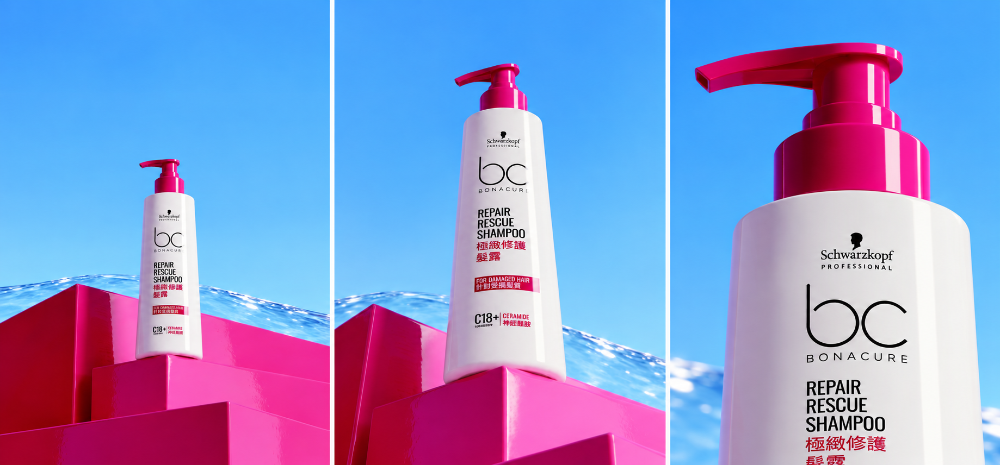
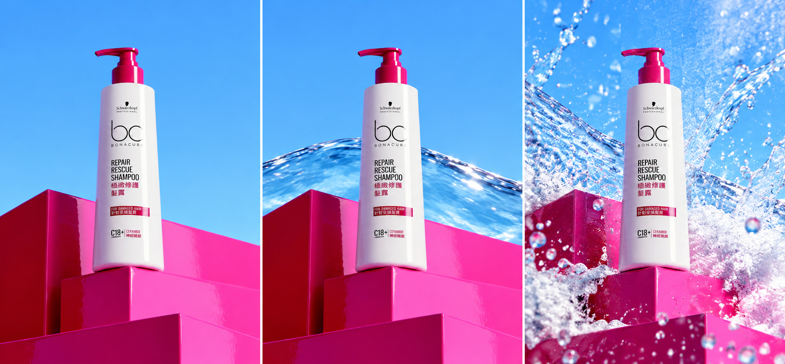
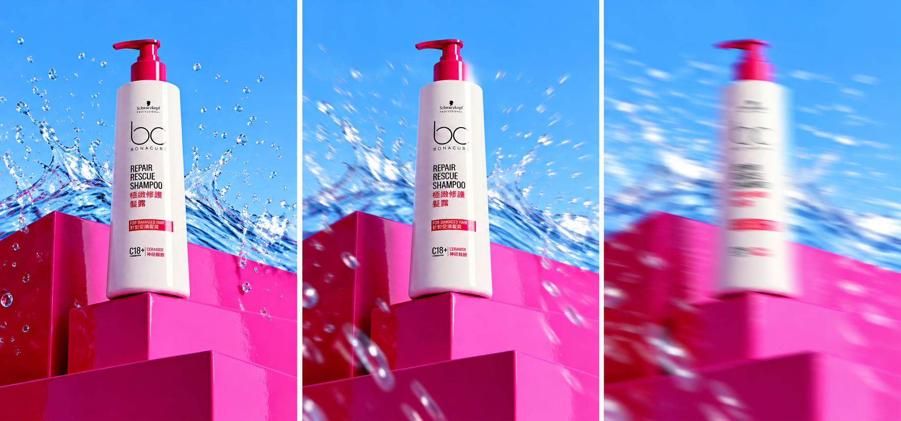
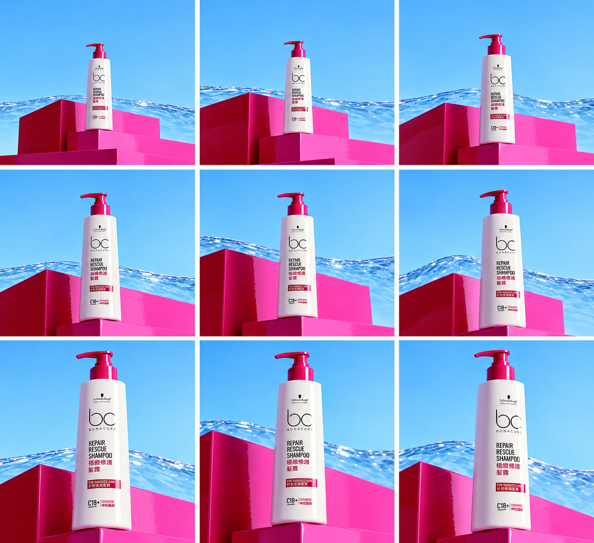
A 慢速前推：產品逐漸放大，觀看方向穩定。
B 橫向移動：產品比例接近不變，背景產生水平視差。
C 環繞運鏡：距離接近不變，瓶身由正面轉為三分之四角度。
每欄由上往下是開始、中段、結尾。關鍵影格只能說明路徑；速度與平順度仍須用影片驗證。
| 提示詞部分 | 為什麼獨立 |
|---|---|
| 鏡位 | 景別或角度不對時，只改觀看距離與方向。 |
| 事件 | 動態太多或太少時，只調整主動作與環境反應。 |
| 保真與焦點 | 先保住商品或人物身分，再限制模糊和物理效果的位置。 |
| 運鏡 | 事件正確但攝影機失敗時，只修改路徑、速度與幅度。 |
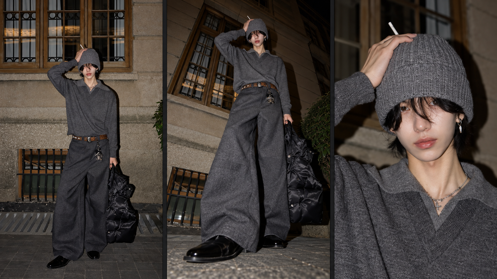
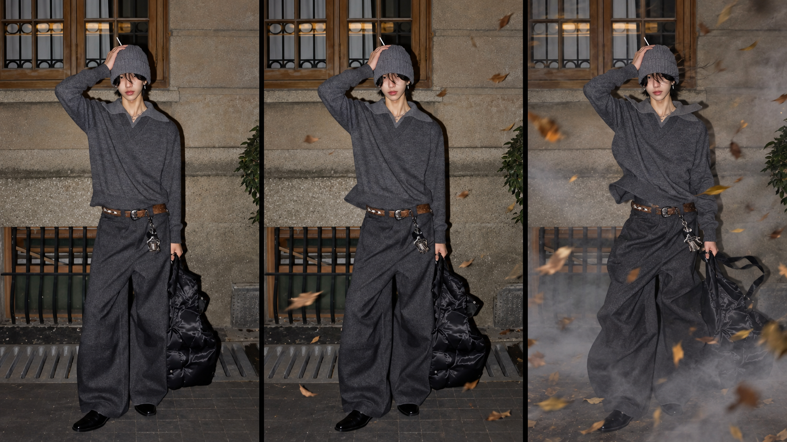
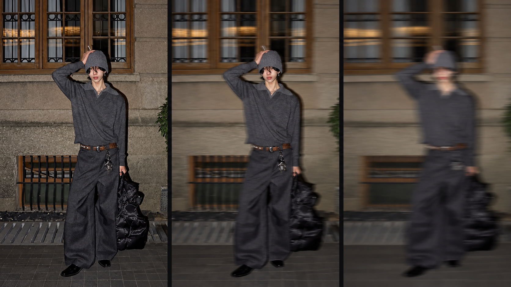
這三組圖由同一張主角參考圖衍生，用來提出預測與驗收項目；它們不是 Kling 的固定輸出證據。
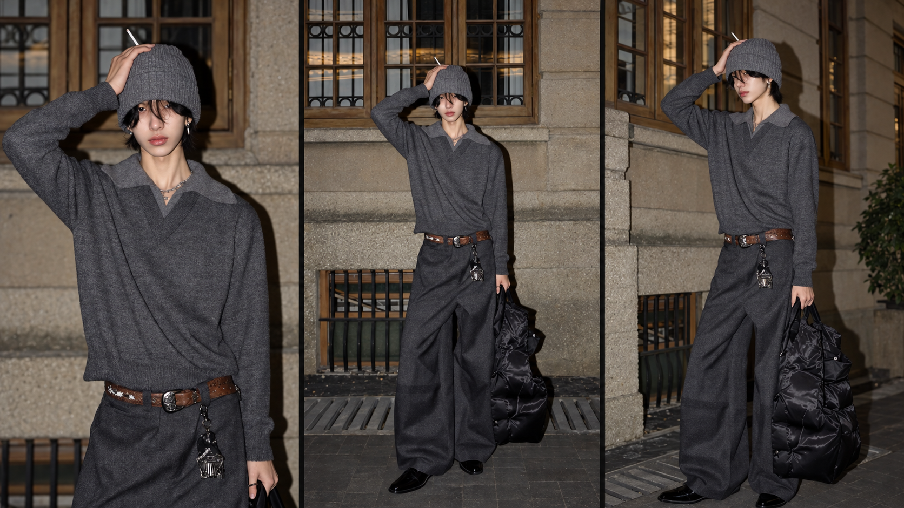
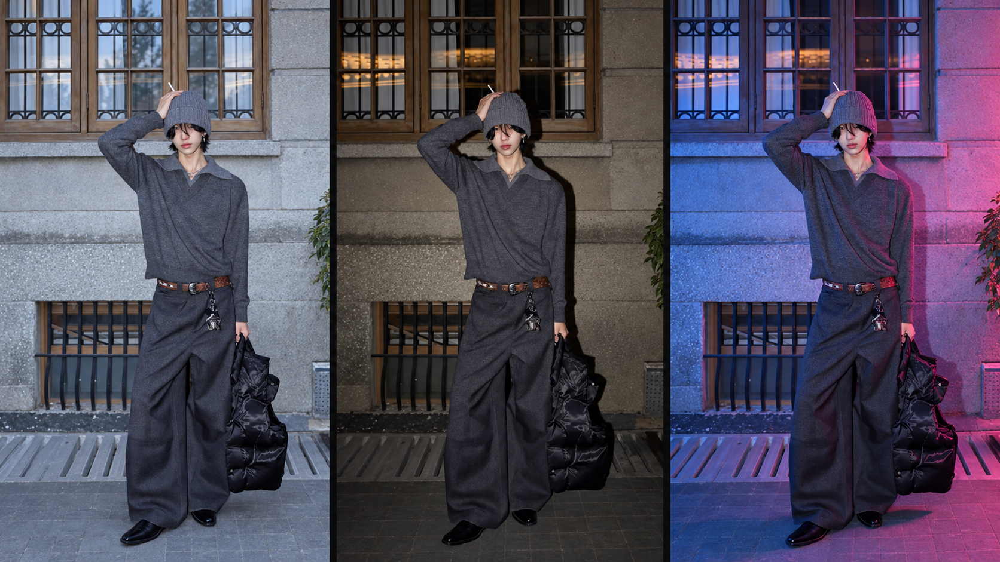
| 實測順序 | Agent 要留下的證據 |
|---|---|
| 固定 | 同一張人物參考圖、相同模型、畫幅、時長與可控參數。 |
| 改變 | 每一輪只改一個主要變因，保留實際提示詞與任務編號。 |
| 比較 | 先寫預測，再依臉、服裝、動作、背景和連續性記錄實際結果。 |
| 保存 | 只有重複測試仍成立的做法才寫入 Skill；單次結果留在 Project。 |